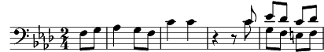

1. Que font-ils au village?
Les bêtes sont rentrées,
Au loin roule un orage,
Le renard est au pré.
Ont-ils fauché les blés,
Nous ont-ils oublié?
Je suis du pays de la longue attente,
Quand Pâques s'attarde en chemin.
Je suis du pays au bord de la pente,
La brume le cache au matin.
2. Que font-ils au village?
C'est l'heure du laitier,
Un oiseau de passage
Les a-t-il alertés?
Que font-ils au village?
Ont-ils rentré les blés?
Nous ont-ils oubliés?
Je suis du pays où les gens vieillissent
Plus tôt qu'aux pays d'alentour.
Il faudrait qu'un jour la terre me nourrisse,
Alors je reviens aux labours.
3. Que font-ils au village?
Les vieilles ont reprisé
Les habits de lainage
Qu'on avait méprisés.
Que font-ils au village?
Ont-ils battu les blés?
Nous ont-ils oubliés?
Je suis du pays où chacun s'accroche
Au mur démoli du jardin.
Son coeur est trop plein, mais vides ses poches,
Et rare est l'odeur de son pain.
Coda: Que font-ils au village?
Nous ont-ils oubliés?"